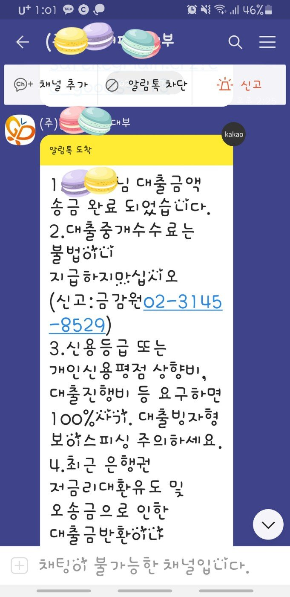

[ 개인회생자대출 ] 조영우 이사님과의 대출후기-눈물나도록 감사?
지난 5월에 조영우 이사님의 도움으로 1차 800만원 개인회생중 대출을 받은 이력이 있습니다.
그때 36회차중 8번납부. 미납없음.
몇달을 잘 버티다가 또다시 생활자금및 아들원룸구입 자금이 필요해서 이리저리 고민하다가
염치불구하고 조영우 이사님께 또 문의를 드렸답니다ㅠ
36회차중13번 개인회생 미납없이 납입중.
4대보험 가입 10년차 직장인이며 년소득 3300만원.
보유대출은 캐피탈-800만원 있었는데
추가 800만원 승인 되었답니다~~~♡♡
부결날줄 알고 조마조마 했는데.
조영우 이사님의 친절한 상담과 도움과 적극적인 추천으로 가능했습니다.
다시한번 감사드립니다.
성실하게 갚아나가겠습니다~~^^

개인회생 끝나면 대환 가능한 저금리로 부탁하면서 또 도움을 받고자 합니다.감사합니다.